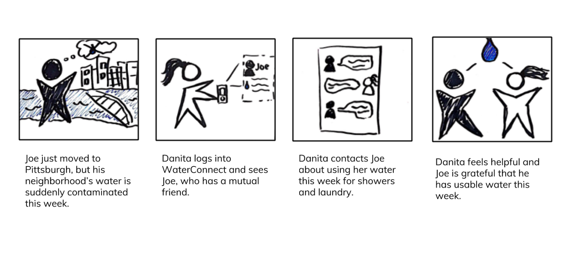
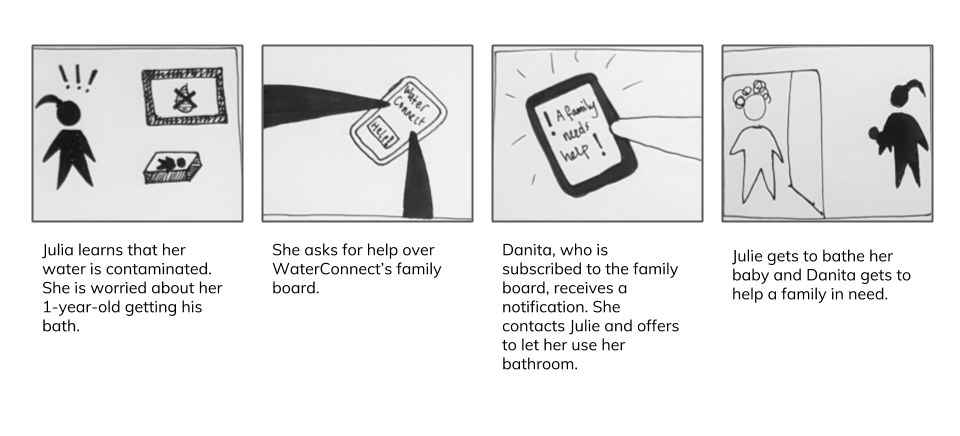
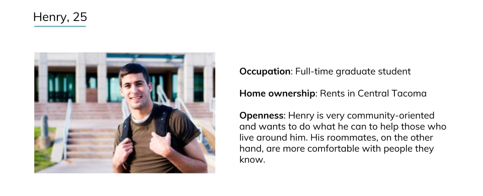
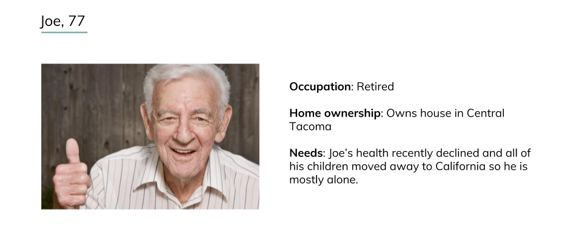
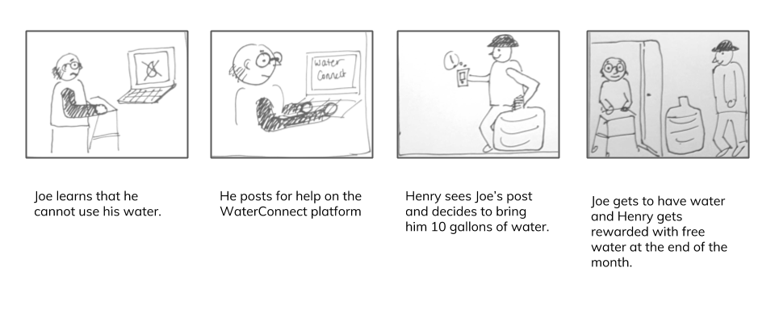

"As many as 63 million people - nearly a fifth of the United States - from rural central California to the boroughs of New York City, were exposed to potentially unsafe water more than once during the past decade."
-USA Today 2017
Studies show people become more altruistic and willing to help neighbors in times of crisis. Therefore, a peer economy can be leveraged. In places with frequent water contamination, strengths of close communities can be used to create a cycle of water sharing.
For the users:
For the city:
After we chose water contamination as our problem space, we went out into the field with three main questions:
Key Insights:
Moving forward with our insights from guerrilla research and supportive secondary research, we created personas and scenarios that conceptualized our service to speed date.
Scenario 1: Joe and Danita connect through a social platform.
Scenario 2: Danita helps a mother in need.
Key Insights
Because our speed dating insights significantly contradicted our findings from guerrilla research, we went back to the drawing board and finalized our personas and scenarios.
  Finalized Scenario: Joe helps a home bound elderly man who needs drinking water.